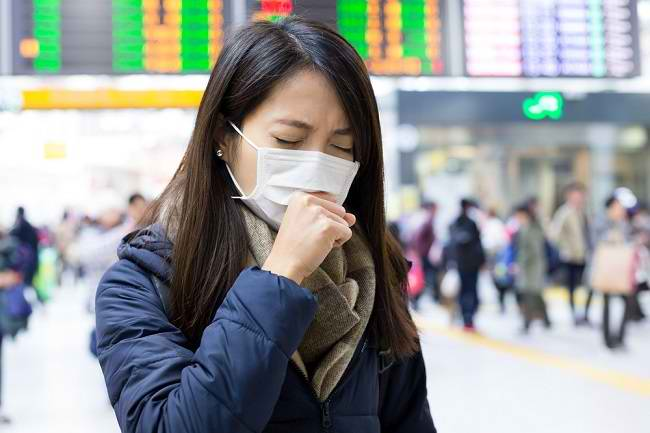

Hasil Lengkap Liga Inggris - Pecundangi Man City, Leicester City Mantap di Puncak
BOLASPORT.COM - Leicester City berhasil menduduki puncak klasemen usai mengalahkan Mancheser City di pekan ketiga Liga Inggris 2020-2021. Kejutan hadir di pekan ketiga Liga Inggris 2020-2021 yang dimainkan pada Minggu (27/9/2020). Leicester City berhasil menang telak dengan skor 5-2 saat bertandang ke markas Manchester City, Etihad Stadium. Hatrrick Jamie Vardy serta dua gol tambahan dari James Maddison dan Youri Tielemans membuat Leicester City keluar sebagai pemenang pertandingan itu.
Baca Juga: Dua Klub Raksasa Liga Inggris Incar Bek Penyakitan Milik BarcelonaSementara itu dua gol hiburan Manchester City dicetak oleh Riyad Mahrez pada awal laga dan bek baru mereka, Nathan Ake, pada menit-menit terakhir. Hasil pertandingan tersebut membuat Leicester City naik ke puncak klasemen sementara Liga Inggris. Pasukan Brendan Rodgers itu sukses menjadi yang teratas karena memiliki selisih gol yang lebih banyak (8) dibandingkan tim yang menghuni urutan dua, Everton (5).
Baca Juga: Satu Kalimat Sakti Frank Lampard yang Buat Chelsea Comeback Lawan West BromManchester City sendiri terpaksa terjun ke urutan 13 gara-gara kekalahan ini setelah pada pekan sebelumnya mereka menduduki peringkat 7 klasemen sementara.
Sumber Bola Sport5 Cara Efektif agar Tidak Tertular Virus Corona
Infeksi virus Corona yang disebut COVID-19 ini pertama kali terjadi di kota Wuhan, China dan sekarang telah ditemukan di berbagai negara, termasuk Indonesia.
Langkah Mencegah Penularan Virus Corona
Virus ini diperkirakan berasal dari hewan, seperti kelelawar dan unta, dan bisa menular dari hewan ke manusia, serta dari manusia ke manusia. Penularan antarmanusia kemungkinan besar melalui percikan dahak saat batuk atau bersin. Ketika terinfeksi virus Corona, seseorang akan mengalami gejala mirip flu, seperti demam, batuk, dan pilek. Namun, beberapa hari setelahnya, orang yang terserang infeksi virus corona bisa mengalami sesak napas akibat infeksi pada paru-paru (pneumonia). Hingga saat ini, belum ada pengobatan yang dapat menyembuhkan infeksi virus Corona. Oleh sebab itu, Organisasi Kesehatan Dunia (WHO) mengimbau agar masyarakat tidak memandang sepele penyakit ini dan senantiasa melakukan tindakan pencegahan. Salah satunya adalah dengan menerapkan social distancing. Beberapa langkah yang bisa dilakukan untuk mencegah infeksi virus Corona, di antaranya:
- Mencuci tangan dengan benar
- Menggunakan masker
- Menjaga daya tahan tubuh
- Menerapkan physical distancing dan isolasi mandiri
- Membersihkan rumah dan melakukan disinfeksi secara rutin
Mencuci tangan dengan benar adalah cara paling sederhana namun efektif untuk mencegah penyebaran virus 2019-nCoV. Cucilah tangan dengan air mengalir dan sabun, setidaknya selama 20 detik. Pastikan seluruh bagian tangan tercuci hingga bersih, termasuk punggung tangan, pergelangan tangan, sela-sela jari, dan kuku. Setelah itu, keringkan tangan menggunakan tisu, handuk bersih, atau mesin pengering tangan. Jika Anda adalah pekerja komuter yang berada di dalam transportasi umum, akan sulit untuk menemukan air dan sabun. Anda bisa membersihkan tangan dengan hand sanitizer. Gunakan produk hand sanitizer dengan kandungan alkohol minimal 60% agar lebih efektif membasmi kuman. Cucilah tangan secara teratur, terutama sebelum dan setelah makan, setelah menggunakan toilet, setelah menyentuh hewan, membuang sampah, serta setelah batuk atau bersin. Cuci tangan juga penting dilakukan sebelum menyusui bayi atau memerah ASI.
Banyak yang menggunakan masker kain untuk mencegah infeksi virus Corona, padahal masker tersebut belum tentu efektif. Secara umum, ada dua tipe masker yang bisa Anda digunakan untuk mencegah penularan virus Corona, yaitu masker bedah dan masker N95. Masker bedah atau surgical mask merupakan masker sekali pakai yang umum digunakan. Masker ini mudah ditemukan, harganya terjangkau, dan nyaman dipakai, sehingga banyak orang yang menggunakan masker ini saat beraktivitas sehari-hari. Cara pakai masker bedah yang benar adalah sisi berwarna pada masker harus menghadap ke luar, sementara sisi dalamnya yang berwarna putih menghadap wajah dan menutupi dagu, hidung, dan mulut. Sisi berwarna putih terbuat dari material yang dapat menyerap kotoran dan menyaring kuman dari udara. Meski tidak sepenuhnya efektif mencegah paparan kuman, namun penggunaan masker ini tetap bisa menurunkan risiko penyebaran penyakit infeksi, termasuk infeksi virus Corona. Penggunaan masker lebih disarankan bagi orang yang sedang sakit untuk mencegah penyebaran virus dan kuman, ketimbang pada orang yang sehat. Sedangkan masker N95 adalah jenis masker yang digunakan sebagai salah satu alat pelindung diri atau APD untuk petugas medis yang merawat pasien COVID-19. Ketika melepaskan masker dari wajah, baik masker bedah maupun masker N95, hindari menyentuh bagian depan masker, sebab bagian tersebut penuh dengan kuman yang menempel. Setelah melepas masker, cucilah tangan dengan sabun atau hand sanitizer, agar tangan bersih dari kuman yang menempel.
Daya tahan tubuh yang kuat dapat mencegah munculnya berbagai macam penyakit. Untuk menjaga dan meningkatkan daya tahan tubuh, Anda disarankan untuk mengonsumsi makanan sehat, seperti sayuran dan buah-buahan, dan makanan berprotein, seperti telur, ikan, dan daging tanpa lemak. Jika bosan dengan makanan yang dimasak sendiri, Anda bisa membeli makanan siap saji atau makanan di restoran melalui layanan pesan antar, namun pastikan makanan tersebut bersih dan sehat. Bila perlu, Anda juga menambah konsumsi suplemen sesuai anjuran dokter. Selain itu, rutin berolahraga, tidur yang cukup, tidak merokok, dan tidak mengonsumsi minuman beralkohol juga bisa meningkatkan daya tahan tubuh agar terhindar dari penularan virus Corona. Beberapa informasi menyebutkan bahwa berjemur di bawah sinar matahari juga dapat mencegah infeksi virus Corona. Sayangnya hal ini masih perlu diteliti lebih lanjut.
Pembatasan fisik atau physical distancing adalah salah satu langkah penting untuk memutus mata rantai penyebaran virus Corona. Hal ini dapat dilakukan dengan cara tidak bepergian keluar rumah, kecuali untuk keperluan yang mendesak atau darurat, seperti berbelanja bahan makanan atau berobat ketika sakit. Pembatasan fisik juga dilakukan dengan cara menjaga jarak minimal 1 meter dengan orang lain dan selalu menggunakan masker, terutama saat beraktivitas di tempat umum atau keramaian. Selama menjalani physical distancing, Anda juga perlu menghindari kontak dengan orang yang sedang sakit, diduga terinfeksi virus Corona, atau sudah dinyatakan positif COVID-19. Jika Anda memiliki salah satu gejala COVID-19 yang bersifat ringan, memiliki riwayat perjalanan atau tinggal di daerah terjangkit virus Corona dalam 14 hari terakhir, atau pernah kontak dengan orang yang dinyatakan positif COVID-19, Anda dianjurkan untuk melakukan isolasi mandiri. Selain itu, isolasi mandiri juga dianjurkan untuk dilakukan oleh orang yang berisiko tinggi terinfeksi virus Corona, seperti lansia atau orang yang memiliki penyakit penyerta, misalnya hipertensi, diabetes, atau daya tahan tubuh yang lemah.
Selain kebersihan diri, menjaga kebersihan rumah juga sangat penting dilakukan selama pandemi COVID-19 berlangsung. Hal ini dikarenakan virus Corona terbukti dapat bertahan hidup selama berjam-jam dan bahkan berhari-hari di permukaan suatu benda. Oleh karena itu, rumah harus rutin dibersihkan dan dilakukan disinfeksi secara menyeluruh, termasuk perabotan dan peralatan rumah yang sering disentuh, seperti gagang pintu, remote televisi, kran air, dan permukaan meja. Saat membersihkan atau melakukan disinfeksi, Anda perlu menggunakan sarung tangan dan masker, serta mencuci tangan dengan air bersih dan sabun setelah selesai membersihkan rumah. Hal ini dilakukan untuk mencegah penularan virus Corona yang mungkin saja terjadi.
Bila Anda dikategorikan sebagai pasien suspek atau probable COVID-19, yang ditandai dengan gejala flu, seperti batuk, demam, dan pilek, yang disertai lemas dan sesak napas, apalagi bila dalam 2 minggu terakhir Anda bepergian ke daerah atau negara yang terjangkit infeksi virus Corona, segeralah periksakan diri ke dokter agar dapat dipastikan penyebabnya dan diberikan penanganan yang tepat.
Sumber Halo dokterRahasia Tampil Cantik Tanpa Biaya Mahal
Liputan6.com, Jakarta Untuk memiliki tampilan cantik yang memesona tidaklah sulit. Bagaimana caranya? Simak beberapa rahasia untuk selalu tampil cantik baik dari dalam maupun dari luar tubuh berikut ini.
- Melakukan olahraga secara rutin
- Melakukan perawatan muka dan tubuh secara teratur
- Mengkonsumsi buah-buahan dan sayur-sayuran
- Manjakan tubuh dan rambut di salon kesayanganmu
Melakukan olahraga secara konsisten merupakan salah satu kunci kesehatan bagi tubuh. Dalam seminggu Anda dianjurkan setidaknya 2-3 kali berolahraga, seperti gym, goga, pilates, dan sebagainya. Selain dipercaya sebagai kunci kesehatan tubuh, olahraga juga baik untuk mengatasi stres. So, bagi kamu yang belum mulai berolahraga dengan rutin, tunggu apalagi?
Memiliki kulit kencang, mulus dan terawat adalah idaman semua wanita. Hampir semua wanita, apalagi yang sudah mulai memasukki umur dengan kepala 3, pastinya akan sangat khawatir dengan masalah kulit, khusunya wajah. Berbagai macam perawatan dipercaya sangat ampuh dalam membuat kulit muka lebih kencang dan juga memperlambat penuaan dini, contohnya facial.
Berbagai macam makanan yang dikonsumsi oleh tubuh mengambil peranan yang cukup penting. Zat-zat yang masuk ke dalam tubuh kita setiap harinya bisa sangat mempengaruhi stabilitas kinerja untuk memproduksi tenaga dan memengaruhi kondisi kulit. Jadi, cermatilah dengan seksama apa saja makanan yang masuk ke dalam tubuh kita.
Ingin tampil segar kembali setelah beraktivitas seharian? Lakukan spa untuk dapatkan tubuh yang lebih rileks setelah sibuk beraktivitas. Ada beberapa paket spa yang bisa kamu coba, seperti Traditional Massage (Balinese Aromatheraphy Massage, Javanese Spa, dan lainnya) atau mencoba perawatan rambut, seperti Hair Spa, Creambath, dan sebagainya.